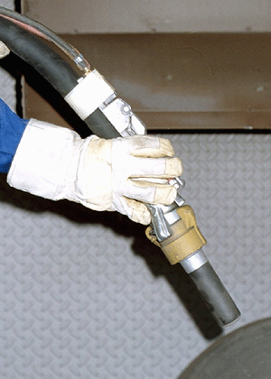

müssen der DIN EN 388 "Schutzhandschuhe gegen mechanische Risiken" und der DIN EN 420 "Schutzhandschuhe Allgemeine Anforderungen und Prüfverfahren" entsprechen, d.h. es muss ein besonders robuster Schutzhandschuh von hoher Abrieb- und Reißfestigkeit sein, der für grobe Arbeiten beim Hantieren mit rauen Materialien geeignet ist. Außerdem sollte er eine lange Stulpe besitzen, damit der Schutzanzug gut über dem Handschuh sitzt.